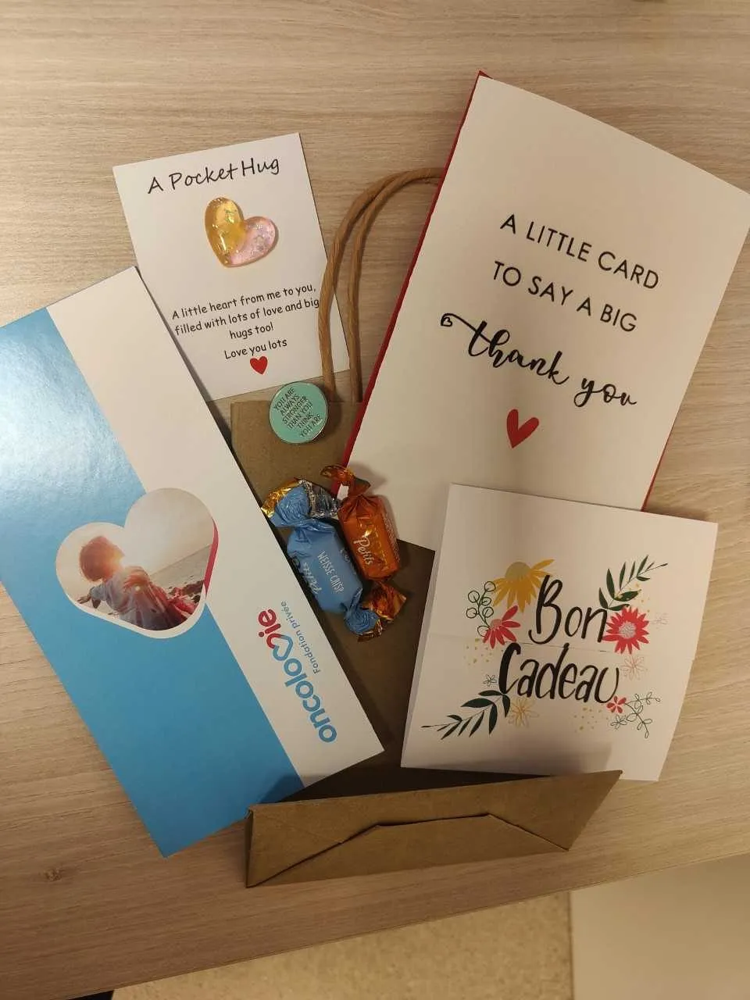
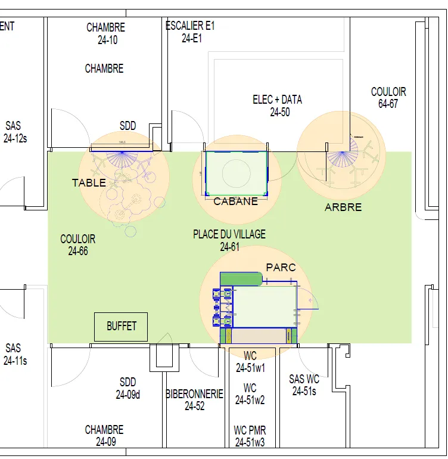
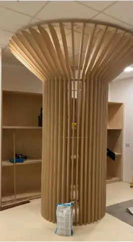
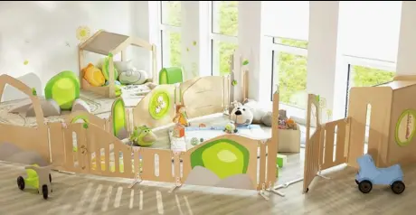
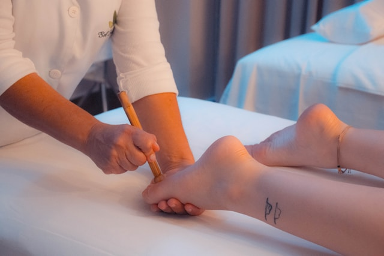
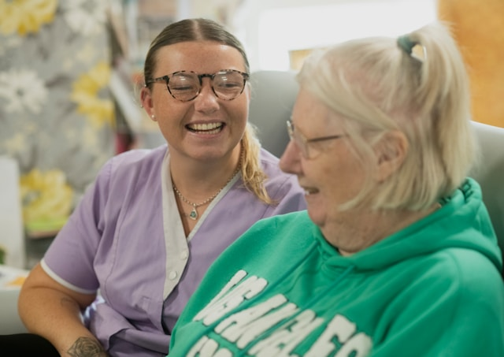

Des initiatives concrètes pour accompagner les patients à chaque étape de leur parcours de soins.
Oncolovie développe des actions qui accompagnent les patients à chaque étape de leur parcours de soins.
Parce que derrière chaque patient, il y a aussi un proche qui veille, accompagne et soutient au quotidien… La Fondation Oncolovie met à disposition des bons cadeaux spécialement pensés pour les aidants proches. Trop souvent, ils s'oublient, s'épuisent et passent au second plan face à la maladie de leur parent ou conjoint.
Ces bons sont une invitation à souffler, à prendre du temps pour soi, à se reconnecter à l'essentiel. Parce que prendre soin des autres, c'est aussi apprendre à prendre soin de soi.

Et si les soins palliatifs, c'était bien plus qu'un lieu où l'on vient pour mourir ?
Souvent méconnus ou entourés d'idées reçues, les soins palliatifs visent avant tout à améliorer la qualité de vie des patients et de leurs proches.
Les soins palliatifs sont souvent associés à un lieu où l'on vient pour mourir. En réalité, leur rôle est beaucoup plus large et essentiel dans l'accompagnement des patients atteints de maladies graves ou incurables.
Ces soins visent à améliorer la qualité de vie des patients et de leurs proches en soulageant la douleur et en réduisant l'anxiété. Ils ne se limitent pas aux traitements médicaux. Ils intègrent aussi un accompagnement psychologique, un soutien aux proches, et parfois même des soins de bien-être, permettant au patient de mieux vivre avec la maladie.
Ils peuvent être introduits très tôt dans l'évolution d'une maladie grave et ne sont pas réservés uniquement aux derniers jours de vie. Contrairement à cette idée reçue, tous les patients admis en soins palliatifs n'y décèdent pas. Certains y séjournent temporairement pour un soulagement des symptômes avant de rentrer chez eux, parfois aussi pour offrir un peu de répit à leur famille.
Les soins palliatifs, c'est bien plus que des soins !
Afin de lever les appréhensions des patients et de leur famille face aux soins palliatifs, la Fondation Oncolovie a financé la réalisation d'une capsule vidéo qui présente ces unités de soins.
Les Drs Vera Zimmermann (Foyer Horizon CHC Moresnet) et Ferdinand Herman (Clinique CHC Hermalle), médecins spécialisés en soins continus et palliatifs, vous en parlent.
"Parce que l'hôpital ne devrait jamais faire oublier l'essentiel : rester un enfant."
La Fondation Oncolovie, en collaboration avec la Fondation Justine Henin, souhaite installer un module de jeux au cœur de la "place du village" de l'unité pédiatrique.
Un espace pensé comme une bulle d'évasion, où les enfants hospitalisés pourront jouer, rire, se retrouver… et simplement vivre des moments d'insouciance malgré la maladie. À travers ce projet, notre volonté est de transformer le quotidien hospitalier en y apportant de la légèreté, du lien et du bien-être.



Face à la maladie, certaines familles doivent aussi faire face à des réalités financières particulièrement lourdes. La Fondation Oncolovie est récemment venue en aide à des parents confrontés à une facture importante liée à l'administration d'un médicament non remboursé par l'INAMI, pourtant indispensable au traitement de leur fille atteinte d'un cancer rare.
Parce que l'accès aux soins ne devrait jamais dépendre de moyens financiers, nous avons souhaité les soutenir dans cette épreuve, en allégeant ce poids supplémentaire. Derrière chaque aide, il y a une famille, une histoire, et surtout la volonté de permettre à chaque enfant de bénéficier des soins dont il a besoin.
Un soin de support précieux en oncologie
Saviez-vous que masser les pieds peut soulager les effets secondaires des traitements contre le cancer ? En stimulant les terminaisons nerveuses, la réflexologie plantaire apaise l'anxiété, réduit les douleurs et améliore la qualité de vie des patients.
Oncolovie propose gratuitement ces séances bien-être sur différents sites hospitaliers. Musique douce, huiles essentielles… tout est réuni pour un vrai moment de détente.
Plus de 350 séances offertes sur une année grâce aux fonds récoltés durant le golf d'Avernas.
🎗️ En soutenant Oncolovie, vous participez concrètement au bien-être des patients.


Le bien-être ne devrait jamais être mis entre parenthèses, même face à la maladie. Fin 2025, la Fondation contre le Cancer a accordé un grant social à la Fondation Oncolovie afin de soutenir le bien-être des patients atteints d'un cancer.
Les patients bénéficiant d'une hospitalisation à domicile (HAD) peuvent accéder à des soins directement chez eux :
La Fondation Oncolovie remercie chaleureusement la Fondation contre le Cancer pour son soutien précieux.